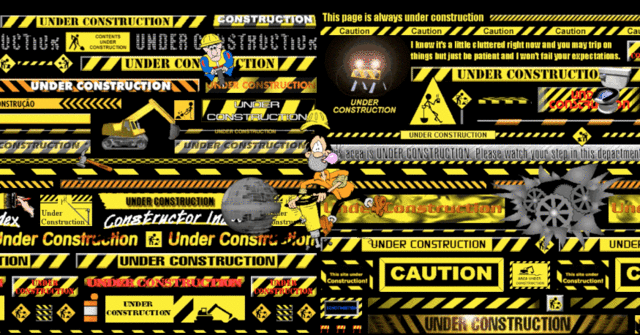
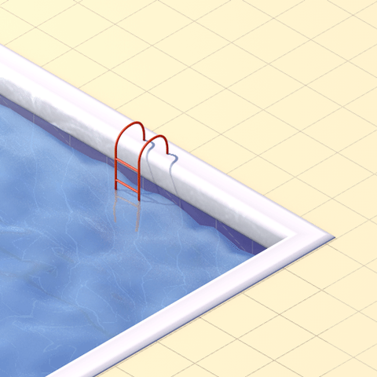
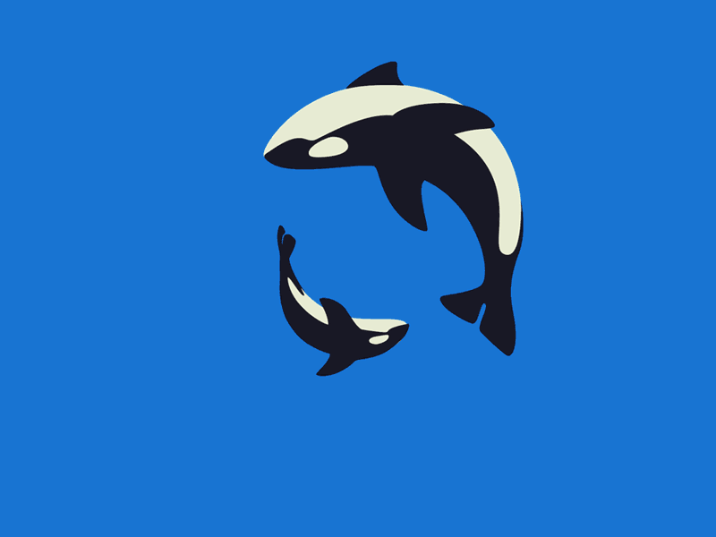

Without laughing. I have been practicing MMA for 6 years now, parallel boxing for 7 years, I could. As well as body building for 4 years, 1m87 for 86kg. I have crazy speed, and reflexes identical to my speed. I just have to wait for him to charge me, dodge him and give him good potatoes in the head. I will not let go at the slightest error, the gorilla is finished. You will always have idiots from here to think that it is impossible. Nothing is impossible with will already friends, and 2) it is not with your loose body that you are going to do anything. Any man a minimum could can defeat a gorilla with a knife already. With bare hands it is not necessarily more complicated it just requires technique.


OCEAN MAN Take me by the hand lead me to the land that you understand OCEAN MAN The voyage to the corner of the globe is a real trip OCEAN MAN The crust of a tan man imbibed by the sand Soaking up the thirst of the land
